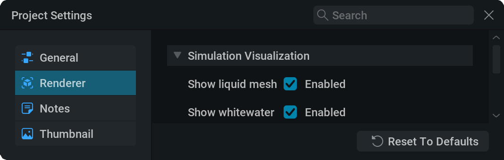
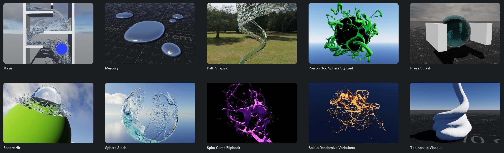
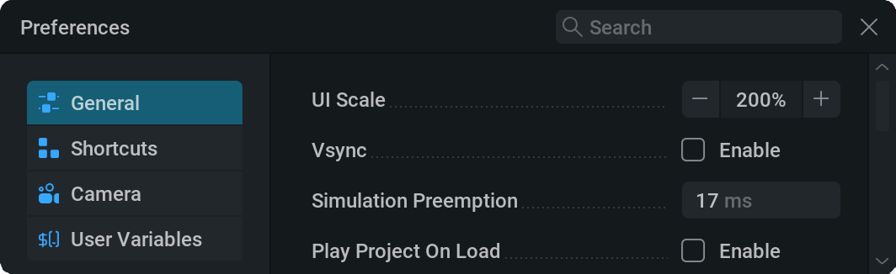
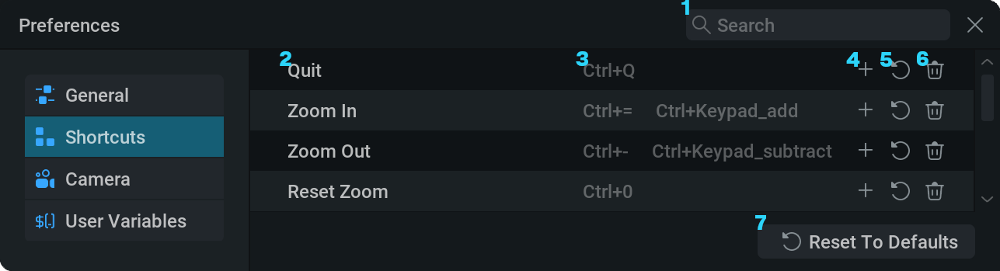
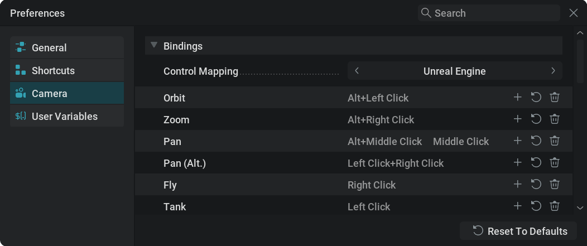
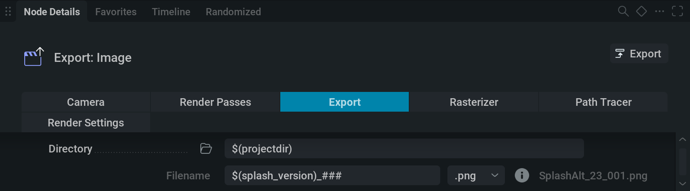

设置#
Project Settings（项目设置）#
常规#
{kind=link}

Tags： 这些标签可用于在 presets 部分浏览预设，该部分位于
 项目管理器中。（预设是 .liquigen 文件，存储在安装目录的 presets 文件夹中。）可以使用以下标签：
项目管理器中。（预设是 .liquigen 文件，存储在安装目录的 presets 文件夹中。）可以使用以下标签： 8 GB,24 GBShape default size scale： 创建新的 Shape 节点时，会将此缩放应用到新形状的默认大小。此设置有助于确保新创建的形状尺寸更合适；例如，如果它们默认总是显得过大或过小。
Read-Only： “Save Read-Only Copy”按钮会打开文件浏览器，用于指定要将项目保存为只读副本的名称和位置。
此项目文件会像普通项目文件一样工作，但当你尝试保存它时，会弹出此提示消息。

Auto-Favorite Changed Parameters（自动收藏已更改参数）： 这会收藏与上次保存文件、默认预设或另一个项目文件相比发生变化的所有参数；另一个项目文件可以通过 Load 按钮浏览选择。
这有助于快速得到项目中最重要参数的列表！
Randomize All Seeds： “Randomize”按钮会随机化所有启用了 Randomize Override 的参数（默认情况下包括所有 Seed 参数）。这会为项目生成一个不同变体。关于随机化的更多信息，请查看我们的 随机化 部分！
{kind=link}
 渲染器#
渲染器#

启用或禁用视口中项目某些元素的可见性。其中大多数会镜像视口中 View 下拉菜单里的显示选项。
{kind=link}
 Reset To Defaults： 弹出一个窗口，询问你是否要重置项目设置。
Reset To Defaults： 弹出一个窗口，询问你是否要重置项目设置。
Confirm 会将所有项目设置重置为默认值。
 备注#
备注#

用于输入备注的文本字段。
这会打开备注窗口（4)
勾选后，打开设置了备注的项目文件时会显示备注窗口。
Project Notes 窗口
备注文本。
缩略图#
{kind=link}
缩略图是与预设一起显示在  Home Screen 上的图像或视频。
Home Screen 上的图像或视频。
{kind=link}

这些视频必须是 PNG 翻页序列，并且两个维度的最大尺寸为 4009 像素。
关于翻页序列的更多信息，请查看我们的 Export 部分。
当显示在 Home Screen 上时，除非翻页序列少于 41 帧，否则缩略图循环点会自动添加交叉淡化。
Preview： 如果有缩略图，这里会显示缩略图预览。你可以
 单击
单击  并在提示中选择 Clear 来移除当前缩略图。
并在提示中选择 Clear 来移除当前缩略图。Capture From Viewport（从视口捕获）： 将当前视口捕获为静态图像，用作缩略图。
Import File： 单击 Import 按钮时，会弹出文件浏览器，你可以在其中查找 png 文件，用作缩略图的翻页序列或静态图像。
Columns / Rows 这里可以设置翻页序列的列数和行数。最大帧数由这两个数相乘得出。
如果列数和行数都设为 1，就会使用静态 png 作为缩略图，并且以下参数不会出现。
Frame Count： 缩略图使用的帧数。
Frame Rate： 播放缩略图时使用的每秒帧数。值越高，视频播放越“快”。
首选项#
常规#

UI Scale： 设置 UI 中所有文本和图标的缩放比例。当你难以阅读小字号文本时，这会很有用。
Vsync： 将 UI 帧率同步到显示器刷新率。
Simulation Preemption： 在暂停以渲染并更新 UI 之前，一个模拟步可运行的时间。较低的值会让 UI 响应更快，但代价是模拟速度降低。
Play Project On Load： 如果勾选，预设打开后会开始模拟。否则，预设会保持暂停，直到手动启动。
Export Warning On Overwrite： 如果勾选，当导出会覆盖其他内容时会弹出警告。例如，如果尝试导出与现有翻页序列具有相同名称、扩展名和目标目录的翻页序列。 Disable Warning 会取消勾选此参数， Cancel 会取消导出，因此不会覆盖任何文件，而 Overwrite 会继续导出并覆盖文件。

UI Layout： 设置四个主面板的布局。如果你移动和缩放这些窗口做了许多更改，这可以用于快速将布局重置为默认状态。
Graph Background Grid Type： 设置节点图的背景网格类型。 None 是流式传输或录制时的最佳选项，因为它能减少压缩伪影。
Mouse Compatibility Mode： 如果勾选，与视口交互时会禁用光标隐藏和光标跳转。这对远程桌面很有用。
Middle-Click Emulation： 如果勾选， alt +
左键会被重映射为  中键点击；这在使用触控板工作时很有用。
中键点击；这在使用触控板工作时很有用。Scroll-Wheel Emulation： 会让中键
+ 左键单击并拖动在使用 Wacom 等数位板时作为滚动事件。这让你可以用类似 Nuke 的方式在节点图中缩放。Max Undo History： 可通过撤销命令回滚的操作数量。
Recovery Autosave Interval： 创建新的恢复自动保存文件之前经过的时间。
FPS Limit： 模拟的最大帧率。如果想在工作时按目标帧率观看模拟，这会很有用。
Show Floating Viewport（显示浮动视口）： 勾选后，在全屏模式下使用另一个面板时，会显示一个浮动视口窗口
 。
。Create Key When Parameter Exposed（参数公开时创建关键帧）： 如果勾选，当将参数设为时间轴动画时，会在当前帧使用当前值创建一个关键帧。
Show Modulator Output On Timeline： 如果勾选，调制器预览会显示在时间轴中。例如，当使用 Mod: Oscillator 节点并使用 Sine 波形时，现在可以清楚看到峰值和谷值与时间轴的对应关系。
Manipulator scale： 缩放视口中的 Move
 、Rotate
、Rotate  或 Scale
或 Scale  操纵器。
操纵器。Template Project： 这里可以设置自定义默认项目。之后此项目会与 File > New Project 一起使用。此项目不会被意外覆盖，因为保存默认项目时，它会表现得像还没有文件名，并提示你指定一个文件名。
Post-Export Command： 例如，当整夜运行导出时，可能希望导出完成后关闭 LiquiGen 以节省电力。这可以通过在此文本字段中输入
$quit来实现。- Relative Asset Paths：
如果勾选，所有通过文件浏览器导入 LiquiGen 的文件都会引用相对于当前 .liquigen 项目文件的路径。使用
..\语法向上导航文件夹，使用/和文件夹名称向下导航。如果你的工作流程会把资产和项目文件放在相近的文件夹结构中，这会很有用，因为它会让 Filepath 参数更清晰，并且当所有文件一起移动到其他文件夹甚至其他驱动器时，引用不会失效。如果未勾选，所有通过文件浏览器导入 LiquiGen 的文件都会引用计算机上的绝对文件路径。这有助于跟踪文件所在位置。
MIDI support： 需要勾选此项才能使用 MIDI 节点。
Show Minimap： 切换节点图中的小地图。
Minimap Location： 下拉菜单，可选择小地图在节点图中的位置。
Minimap Scale： 控制小地图大小，范围从 40% 到 200%。
 快捷键#
快捷键#

搜索命令。
命令。
当前按键绑定。
 为此命令添加快捷键。
为此命令添加快捷键。 将快捷键重置为默认值。
将快捷键重置为默认值。- 移除此命令的所有快捷键。
这会弹出一个窗口，询问你是否要将所有键盘快捷键重置为默认值。
摄像机#
{kind=link}

Bindings#
此部分用于设置移动摄像机的按键绑定。
摄像机绑定的设置方式与 快捷键 选项卡中相同。但在这里，可以接受多个键和鼠标按钮的任意组合。
Control Mapping： 下拉菜单，包含不同控制映射类型。当你习惯另一种摄像机控制方式（例如 Blender 或 Maya 的 Industry Compatible（行业兼容））时，这会很有用。它们可以理解为 bindings（绑定）选项卡的预设。更改控制映射会覆盖按键映射。
Orbit： 围绕枢轴环绕。
Zoom： 将摄像机移近或远离枢轴。
Pan：（默认情况下）在屏幕空间中水平和垂直移动摄像机。
Pan (Alt.)： 让摄像机沿替代平面移动。可在 Pan (alt) 部分中设置。
Fly： 用于激活飞行模式的按键绑定。飞行模式允许你以第一人称方式四处移动，使用 W, A, S, D 键或方向键四处移动，并使用 E 和 Q 键上下移动。
Tank： 用于激活坦克模式的按键绑定。坦克模式允许你用鼠标让摄像机左右转向、前后移动。
枢轴#
Pivot To Cursor： 启用后，缩放和环绕会围绕枢轴位置移动，而不是围绕摄像机中心移动。枢轴会以
 蓝色十字准星表示，并设置在光标位置。例如，这有助于轻松缩放到某个水滴，或围绕它环绕。
蓝色十字准星表示，并设置在光标位置。例如，这有助于轻松缩放到某个水滴，或围绕它环绕。当光标悬停在天空或地面上时，枢轴会回退到摄像机中心。
- Pivot To Ground： 指定当光标位于地面上时枢轴的行为。
Never： 使用摄像机中心作为枢轴，应用默认行为。
Zoom only： 缩放时，摄像机会朝光标放在地面上的枢轴移动。
Zoom and Orbit： 摄像机会朝光标放在地面上的枢轴缩放，并围绕该枢轴环绕。
Always Show Pivot： 如果勾选，蓝色十字准星
（表示枢轴）会始终显示，即使没有与摄像机交互也是如此。
环绕#
Orbit Sensitivity： 摄像机环绕速度，单位为度/像素。因此，当值为 0.4 时，光标移动 1 个像素，摄像机会环绕 0.4 度。
Invert Vertical Orbit Direction： 反转光标输入的垂直轴。启用后，向上移动光标会向下环绕，反之亦然。
缩放#
Zoom Input Axis： 指定摄像机缩放是基于光标水平移动还是垂直移动。
Invert Zoom Direction： 如果 Mouse 被勾选，向右或向上移动光标会放大为缩小。如果 Wheel 被勾选，向上滚动会放大为缩小。
平移#
Pan Sensitivity： 平移灵敏度。较高的值会让较少的光标移动产生更快的平移。此设置在常规平移和替代平移模式之间共享。
Distance to Pivot Scaling： 启用后，平移灵敏度会与摄像机到上一个枢轴点的距离成比例。当大幅放大或缩小主体时，这通常会让平移速度更舒适。
Pan Plane： 鼠标平移所在的屏幕空间相对平面。
Pan (alt)#
Pan Plane： 鼠标平移所在的屏幕空间相对平面。
飞行#
Fly Sensitivity： 较高的值会提高飞行速度，让你移动得更快。较低的值会降低飞行速度，让摄像机移动更精确。
Distance to Pivot Scaling： 启用后，飞行灵敏度会与摄像机到上一个枢轴点的距离成比例。这会让围绕主体放大或缩小时的飞行速度看起来更一致。
WASD Fly Plane： 摄像机使用 W, A, S, D 或方向键飞行时所在的屏幕空间相对平面
 用户变量#
用户变量#
自定义变量可用于导出节点文件路径，以改进工作流程。
例如，如果你有很多用于不同捕获类型的导出节点，并想修改所有文件名中的某一部分；如果所有文件名都包含用户变量，只需在这里更改变量值，就能一次性改变所有文件名，而不必逐个修改。

变量名称。
变量值。
- 移除变量。
添加新变量。
